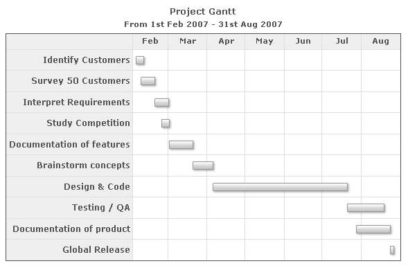
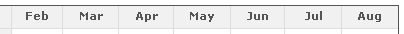
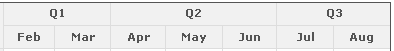

Gantt Chart > Creating your first chart |
||||||||||||||||||||||||||||||||||||
Here, we're going to create a simple Gantt chart using FusionWidgets. We'll try to keep things as simple as possible in this example and keep on learning new things incrementally in the forthcoming sections. To create a Gantt chart using FusionWidgets, you need to take the following steps:
Here, we'll focus on the XML structure of the Gantt, as inclusion in HTML page has already been discussed in the section "Creating your first chart". So, let's first decide on the data that we'll be plotting. |
||||||||||||||||||||||||||||||||||||
| Project Schedule Data | ||||||||||||||||||||||||||||||||||||
As the simplest example, we'll plot the timeline of a fictitious project let's say "Project Gantt". This project has multiple sub-tasks which we'll be plotting on a Gantt chart to visually illustrate the timeline. Before delving into XML, let's see the data for the chart in tabular format. All dates are in mm/dd/yyyy format. |
||||||||||||||||||||||||||||||||||||
|
||||||||||||||||||||||||||||||||||||
As you can see above, we've:
Before we delve into creating the XML for above data table, let's look at how the final chart would look: |
||||||||||||||||||||||||||||||||||||
|  | ||||||||||||||||||||||||||||||||||||
| Now, if you're already excited, let's see how to build the XML for the Gantt chart. | ||||||||||||||||||||||||||||||||||||
| Building the XML for above chart | ||||||||||||||||||||||||||||||||||||
To build the XML for above chart, we need to:
The final XML for the chart would look as under: |
||||||||||||||||||||||||||||||||||||
| <chart dateFormat='mm/dd/yyyy' caption='Project Gantt' subCaption='From 1st Feb 2007 - 31st Aug 2007'> <categories> <category start='02/01/2007' end='03/01/2007' label='Feb' /> <category start='03/01/2007' end='04/01/2007' label='Mar' /> <category start='04/01/2007' end='05/01/2007' label='Apr' /> <category start='05/01/2007' end='06/01/2007' label='May' /> <category start='06/01/2007' end='07/01/2007' label='Jun' /> <category start='07/01/2007' end='08/01/2007' label='Jul' /> <category start='08/01/2007' end='09/01/2007' label='Aug' /> </categories> <processes fontSize='12' isBold='1' align='right'> <process label='Identify Customers' /> <process label='Survey 50 Customers' /> <process label='Interpret Requirements' /> <process label='Study Competition' /> <process label='Documentation of features' /> <process label='Brainstorm concepts' /> <process label='Design & Code' /> <process label='Testing / QA' /> <process label='Documentation of product' /> <process label='Global Release' /> </processes> <tasks> <task start='02/04/2007' end='02/10/2007' /> <task start='02/08/2007' end='02/19/2007' /> <task start='02/19/2007' end='03/02/2007' /> <task start='02/24/2007' end='03/02/2007' /> <task start='03/02/2007' end='03/21/2007' /> <task start='03/21/2007' end='04/06/2007' /> <task start='04/06/2007' end='07/21/2007' /> <task start='07/21/2007' end='08/19/2007' /> <task start='07/28/2007' end='08/24/2007' /> <task start='08/24/2007' end='08/27/2007' /> </tasks> </chart> |
||||||||||||||||||||||||||||||||||||
| <chart> element and its attributes | ||||||||||||||||||||||||||||||||||||
Like all other charts in FusionCharts and FusionWidgets suite, the root element of the Gantt chart is <chart>. This element can accept a lot of attributes, which decide the functional and cosmetic properties of the chart. The entire list of properties is discussed in the section "XML Sheet". Here, we'll discuss only the properties relevant to this chart. |
||||||||||||||||||||||||||||||||||||
| Specifying input date format for the chart | ||||||||||||||||||||||||||||||||||||
The most important (and mandatory) attribute for <chart> element is dateFormat. This attribute lets you specify the format of your dates in XML. For example, in our case, we've specified the dates in mm/dd/yyyy format. As such, we need to tell the Gantt chart that we're specify the date in mm/dd/yyyy format. Otherwise, the chart would not be able to interpret dates and would not render properly. FusionWidgets allows you to specify the date in any one of the following formats. As such, the dateFormat attribute can take any one of these values, and all your dates specified in the XML should conform to that format.
To keep things simple here, we're not discussing time as part of date. We've covered that in the section "Time based charts" |
||||||||||||||||||||||||||||||||||||
| Specifying caption and sub-caption for the chart | ||||||||||||||||||||||||||||||||||||
We specify the caption and sub-caption for the chart using the following attributes of <chart> element:
|
||||||||||||||||||||||||||||||||||||
| Defining the visual timeline for the chart | ||||||||||||||||||||||||||||||||||||
Next, we define the visual timeline for the chart. FusionWidgets Gantt chart allows you to define any number of date categories on the chart, and even irregular ones too. In our chart, since we're just showing the months (as shown below), we've defined only 1 <categories> element. |
||||||||||||||||||||||||||||||||||||
|  | ||||||||||||||||||||||||||||||||||||
Within the <categories> element, you can define the sub-categories, which are actually the divisions that you want for the category. We've divided our main category into months, and as such each category represents 1 month. For each category, you can define your custom label and more cosmetics (discussed in XML sheet). Our XML for visual date scale looks as under: |
||||||||||||||||||||||||||||||||||||
| <categories> <category start='02/01/2007' end='03/01/2007' label='Feb' /> <category start='03/01/2007' end='04/01/2007' label='Mar' /> <category start='04/01/2007' end='05/01/2007' label='Apr' /> <category start='05/01/2007' end='06/01/2007' label='May' /> <category start='06/01/2007' end='07/01/2007' label='Jun' /> <category start='07/01/2007' end='08/01/2007' label='Jul' /> <category start='08/01/2007' end='09/01/2007' label='Aug' /> </categories> |
||||||||||||||||||||||||||||||||||||
| Adding more categories | ||||||||||||||||||||||||||||||||||||
| If you want to add another category on the date scale, say a scale showing quarters, you would need to add another <categories> element as shown below: | ||||||||||||||||||||||||||||||||||||
| <chart ... > ... <categories> <category start='02/01/2007' end='04/01/2007' label='Q1' /> <category start='04/01/2007' end='07/01/2007' label='Q2' /> <category start='07/01/2007' end='09/01/2007' label='Q3' /> </categories> <categories> <category start='02/01/2007' end='03/01/2007' label='Feb' /> <category start='03/01/2007' end='04/01/2007' label='Mar' /> <category start='04/01/2007' end='05/01/2007' label='Apr' /> <category start='05/01/2007' end='06/01/2007' label='May' /> <category start='06/01/2007' end='07/01/2007' label='Jun' /> <category start='07/01/2007' end='08/01/2007' label='Jul' /> <category start='08/01/2007' end='09/01/2007' label='Aug' /> </categories> ... </chart> |
||||||||||||||||||||||||||||||||||||
| This will give the following result: | ||||||||||||||||||||||||||||||||||||
|  | ||||||||||||||||||||||||||||||||||||
Similarly, you can add weeks, days, hours, minutes etc. as sub-categories too. The idea is to add as many categories as you need with each sub-category within containing the start and end date. You'll just need to keep the following considerations in mind:
|
||||||||||||||||||||||||||||||||||||
| Defining processes for the chart | ||||||||||||||||||||||||||||||||||||
Next, we define the list of processes for the chart using the <processes> element. This element can assume a lot of visual and functional attributes, which have been discussed in XML sheet. Here, we just specify a few attributes to change the cosmetics. Each <process> element within the <processes> element represent a single process on the chart. |
||||||||||||||||||||||||||||||||||||
| <processes fontSize='12' isBold='1' align='right'> <process label='Identify Customers' /> <process label='Survey 50 Customers' /> <process label='Interpret Requirements' /> <process label='Study Competition' /> <process label='Documentation of features' /> <process label='Brainstorm concepts' /> <process label='Design & Code' /> <process label='Testing / QA' /> <process label='Documentation of product' /> <process label='Global Release' /> </processes> |
||||||||||||||||||||||||||||||||||||
| Defining the tasks | ||||||||||||||||||||||||||||||||||||
| Finally, we define the tasks for the chart using <tasks> and <task> element. Each task represents a horizontal bar on the chart, spanning from the specified start date to end date. Both these elements can have a number of additional cosmetic and functional properties which have been defined in XML Sheet. | ||||||||||||||||||||||||||||||||||||
| <tasks> <task start='02/04/2007' end='02/10/2007' /> <task start='02/08/2007' end='02/19/2007' /> <task start='02/19/2007' end='03/02/2007' /> <task start='02/24/2007' end='03/02/2007' /> <task start='03/02/2007' end='03/21/2007' /> <task start='03/21/2007' end='04/06/2007' /> <task start='04/06/2007' end='07/21/2007' /> <task start='07/21/2007' end='08/19/2007' /> <task start='07/28/2007' end='08/24/2007' /> <task start='08/24/2007' end='08/27/2007' /> </tasks> |
||||||||||||||||||||||||||||||||||||
When specifying the dates for tasks, you need to make sure that:
Now that our first chart is done, we'll look into a few of the basic chart configuration properties in the next section. |